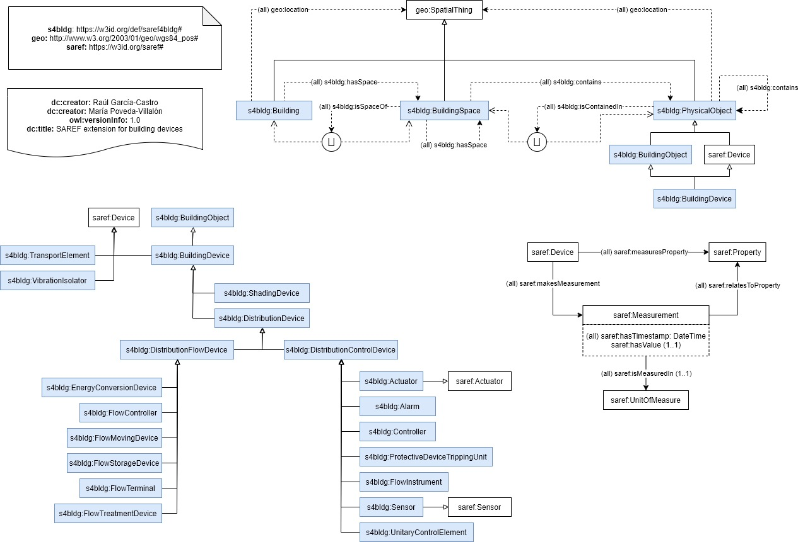
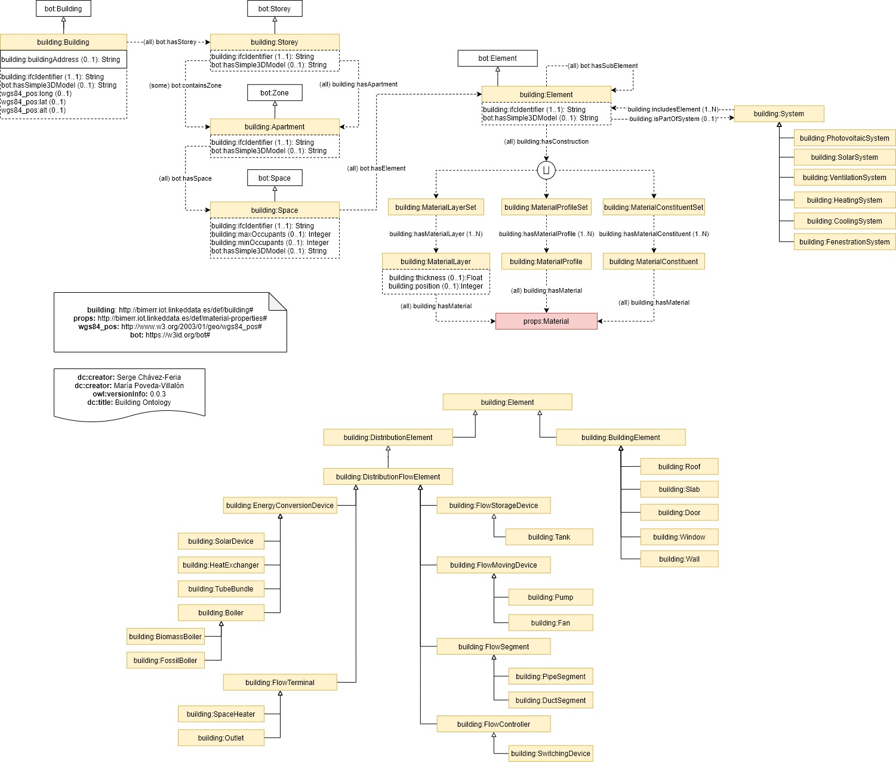

Chowlk Specification
Authors:
María Poveda-Villalón (Universidad Politécnica de Madrid)
Serge Chávez-Feria (Universidad Politécnica de Madrid)
License:
Apache 2.0 License
Abstract
This document describes the Chowlk specification, a set of recomendations for ontology diagrams representation.
Table of Content
- Introduction
- Specification
- Basic Elements
- Classes
- Sub-Class
- Equivalent and Disjoint Classes
- Intersection, Union and Complement of Classes
- Object Properties
- Universal Restrictions
- Existential Restrictions
- Cardinality Restrictions
- Other Characteristics
- Domain and Range
- Datatype Properties
- Universal Restrictions
- Existential Restrictions
- Cardinality Restrictions
- Other Characteristics
- Domain and Range
- Relations between Properties
- Constructs for Indiviuals and RDF data
- Example
- CHOWLK Code Generation Service
- References
- Acknowledgment
1. Introduction
2. Specification
This sections gives detailed information about the drawio blocks used to represent the OWL ontological elements utilized in the construction of an ontology. The specification is structured around the three main elements in an ontology: owl:Class, owl:ObjectProperty and owl:DatatypeProperty. Each table in the sub-sections contains not only the diagram block but also the equivalent owl code, and a description of the element.
2.1 Basic Elements
| Diagram BLOCK |
OWL Element |
Description |
 |
owl:Class
owl:Individual |
Block to represent named and unnamed classes, as well as individual elements within the ontology conceptualization. The content of the block should be accompanied with the prefix and the name of the concept on order to fully identify it. |
 |
owl:ObjectProperty |
Standard way to represent object properties. Variations can apply to the type of line or the connections style depending on the range or domain specification. For more details see section 2.10. |
 |
owl:subClassOf |
Special arrow to indicate sub-class relationship between two classes. |
 |
rdf:type
owl:subClassOf |
Special arrow to represent several relationships between elements of this specification. It can be used to indicate rdf:type relationships, owl:subClassOf relationships, or to connect a owl:unionOf axiom with all the concepts it is composed of. |
 |
owl:DatatypeProperty |
Standard way to represent datatype properties attached to a specific owl:Class element. Variations can apply to the type of outer line depending on the domain and range specification. For more details see section 2.11. |
 |
owl:ObjectProperty
owl:DatatypeProperty
|
Alternative option to represent object properties and datatype properties. Mainly used to represent relationships between properties. For more details see section 2.14. |
 |
owl:intersectionOf
owl:unionOf
owl:equivalentClass
owl:disjointWith
|
Block to indicate intersection or union of two or more owl:Class elements. Additionally, it can be used to determine equivalence and disjoint relationships between concepts. |
 |
@prefix base: <http://namespace.com#> |
Block to indicate all the namespaces used in the ontology. The first namespace is the URI used for the current ontology. It is obligatory to include all the namespaces being used in order to use the ontology converter service. |
 |
owl:AnnotationProperty |
Block to indicate the annotation properties describing the ontology. The annotations in use should include the prefix and the annotation name, as indicated in the figure. If custom annotations are utilized, the namespace block should include the prefixes and namespaces for those annotation properties. |
2.2 Classes
2.2.1 Sub-Class
| Diagram BLOCK |
OWL Element |
Description |
 |
ns:Class1 owl:subClassOf ns:Class2 |
Option 1 to express that ns:Class1 is sub-class of ns:Class2. |
 |
Option 2 to express that ns:Class1 is sub-class of ns:Class2. |
2.2.2 Equivalent and Disjoint Classes
| Diagram BLOCK |
OWL Element |
Description |
 |
ns:Class1 owl:equivalentClass ns:Class2 |
Option 1 for equivalent classes. |
 |
Option 2 for equivalent classes. |
 |
ns:Class1 owl:disjointWith ns:Class2 |
Option 1 for disjointness between classes. |
 |
Option 2 for disjointness between classes. |
2.2.3 Intersection, Union and Complement of Classes
| Diagram BLOCK |
OWL Element |
Description |
 |
owl:intersectionOf (ns:Class1 ns:Class2) |
Option 1 for intersection between classes. |
 |
Option 2 for intersection between classes. |
 |
owl:unionOf (ns:Class1 ns:Class2) |
Option 1 for union of two concepts. |
 |
Option 2 for union of two concepts. |
 |
owl:complementOf ns:Class1 |
Option 1 for union of two concepts. |
2.3 Object Properties
2.3.1 Universal Restrictions
| Diagram BLOCK |
OWL Element |
Description |
 |
ns:Class1 rdf:type owl:Class ;
rdfs:subClassOf [ rdf:type owl:Restriction ;
owl:onProperty ns:objectProperty ;
owl:allValuesFrom ns:Class2 ] . |
Option 1 for a universal restriction between 2 concepts. ns:Class1 is subclass of an anonymus concept which has an object property ns:objectProperty, and all the individuals for this property shall come from ns:Class2 |
 |
Option 2 for a universal restriction with an object property. |
 |
Option 3 for a universal restriction with an object property. |
2.3.2 Existential Restrictions
| Diagram BLOCK |
OWL Element |
Description |
 |
ns:Class1 rdf:type owl:Class ;
rdfs:subClassOf [ rdf:type owl:Restriction ;
owl:onProperty ns:objectProperty ;
owl:someValuesFrom ns:Class2 ] . |
Option 1 for an existential restriction between 2 concepts. ns:Class1 is subclass of an anonymus concept which has an object property ns:objectProperty, and some the individuals for this property shall come from ns:Class2 |
 |
Option 2 of an existential restriction between 2 concepts. |
 |
Option 3 of an existential restriction between 2 concepts. |
2.3.3 Cardinality Restrictions
| Diagram BLOCK |
OWL Element |
Description |
 |
ns:Class1 rdf:type owl:Class ;
rdfs:subClassOf [ rdf:type owl:Restriction ;
owl:onProperty ns:objectProperty ;
owl:minQualifiedCardinality "N1"^^xsd:nonNegativeInteger ;
owl:onClass ns:Class2 ] ,
[ rdf:type owl:Restriction ;
owl:onProperty ns:objectProperty ;
owl:maxQualifiedCardinality "N2"^^xsd:nonNegativeInteger ;
owl:onClass ns:Class2 ] .
|
Cardinality restriction of a concept on an object property. ns:Class1 is subclass of an anonymus concept which has an object property ns:objectProperty, and shall have at least N1 and at most N2 individuals from class ns:Class2. If the N2 element is equal to the letter N, it means owl:maxQualifiedCardinality does not exist. |
2.3.4 Other Characteristics
| Diagram BLOCK |
OWL Element |
Description |
 |
ns:objectProperty rdf:type owl:ObjectProperty ,
owl:FunctionalProperty .
|
Option 1 for functional property. |
 |
Option 2 for a functional property. |
 |
ns:objectProperty rdf:type owl:ObjectProperty ,
owl:InverseFunctionalProperty .
|
Option 1 for an inverse functional property. |
 |
Option 2 for an inverse functional property. |
 |
ns:objectProperty rdf:type owl:ObjectProperty ,
owl:SymmetricProperty .
|
Option 1 for a symmetric property. |
 |
Option 2 for a symmetric property. |
 |
ns:objectProperty rdf:type owl:ObjectProperty ,
owl:TransitiveProperty .
|
Option 1 for a transitive property. |
 |
Option 2 for a transitive property. |
2.3.5 Domain and Range
| Diagram BLOCK |
OWL Element |
Description |
 |
ns:objectProperty rdf:type owl:ObjectProperty . |
Option 1 for object property ns:objectProperty without domain and range. |
 |
Option 2 with object property ns:objectProperty without domain and range. |
 |
ns:objectProperty rdf:type owl:ObjectProperty ;
rdfs:domain ns:Class1 ;
rdfs:range ns:Class2 .
|
Option 1 for object property ns:objectProperty with domain and range. |
 |
Option 2 for object property ns:objectProperty with domain and range. |
 |
ns:objectProperty rdf:type owl:ObjectProperty ;
rdfs:domain ns:Class1 . |
Object property ns:objectProperty with domain but without range. |
 |
ns:objectProperty rdf:type owl:ObjectProperty ;
rdfs:range ns:Class2 . |
Object property ns:objectProperty with range but without domain. |
2.4 Datatype Properties
2.4.1 Universal Restrictions
| Diagram BLOCK |
OWL Element |
Description |
 |
ns:Class rdf:type owl:Class ;
rdfs:subClassOf [ rdf:type owl:Restriction ;
owl:onProperty ns:datatypeProperty ;
owl:allValuesFrom datatype ] .
|
Option 1 for an universal restriction between a concept and a datatype. ns:Class is subclass of an anonymus concept which has a datatype property ns:datatypeProperty, and all the values must be of type datatype. |
 |
Option 2 for an universal restriction between a concept and a datatype. |
2.4.2 Existential Restrictions
| Diagram BLOCK |
OWL Element |
Description |
 |
ns:Class rdf:type owl:Class ;
rdfs:subClassOf [ rdf:type owl:Restriction ;
owl:onProperty ns:datatypeProperty ;
owl:someValuesFrom datatype ] .
|
Option 1 for an existential restriction between a concept and a datatype. ns:Class is subclass of an anonymus concept which has a datatype property ns:datatypeProperty, and some values must be of type datatype. |
 |
Option 2 for an existential restriction between a concept and a datatype. |
2.4.3 Cardinality Restrictions
| Diagram BLOCK |
OWL Element |
Description |
 |
ns:Class rdf:type owl:Class ;
rdfs:subClassOf [ rdf:type owl:Restriction ;
owl:onProperty ns:datatypeProperty ;
owl:minCardinality "N1"^^xsd:nonNegativeInteger ] ,
[ rdf:type owl:Restriction ;
owl:onProperty ns:datatypeProperty ;
owl:maxCardinality "N2"^^xsd:nonNegativeInteger ] .
|
Cardinality restriction of a concept on a datatype property. ns:Class is subclass of an anonymus concept which has an datatype property ns:datatypeProperty, and shall have at least N1 and at most N2 values. If the N2 element is equal to the letter N, it means owl:maxCardinality does not exist. |
2.4.4 Other Characteristics
| Diagram BLOCK |
OWL Element |
Description |
 |
ns:datatypeProperty rdf:type owl:DatatypeProperty ,
owl:FunctionalProperty .
|
Option 1 for a functional property. |
 |
Option 2 for a functional property. |
2.4.5 Domain and Range
| Diagram BLOCK |
OWL Element |
Description |
 |
ns:datatypeProperty rdf:type owl:DatatypeProperty . |
Datatype property ns:datatypeProperty without domain and range. |
 |
ns:datatypeProperty rdf:type owl:DatatypeProperty ;
rdfs:domain ns:Class ;
rdfs:range datatype .
|
Datatype property ns:datatypeProperty with domain and range. |
 |
ns:datatypeProperty rdf:type owl:DatatypeProperty ;
rdfs:domain ns:Class .
|
Datatype property ns:datatypeProperty with domain and without range. |
 |
ns:datatypeProperty rdf:type owl:DatatypeProperty ;
rdfs:range datatype .
|
Datatype property ns:datatypeProperty without domain and with range. |
2.5 Relations between Properties
The following section applies to both type of properties: owl:ObjectProperties and owl:DatatypeProperties. For demonstration purposes we will only use object properties in the examples. It is also indicated if the OWL construct applies to object properties, datatype properties, or both.
| Diagram BLOCK |
OWL Element |
Description |
 |
ns:objectProperty1 rdfs:subPropertyOf ns:objectProperty2 |
Option 1 for a sub-property relationship between two object properties. This construct applies to owl:ObjectProperties and owl:DatatypeProperties. |
 |
Option 2 for a sub-property relationship between two object properties. This construct applies to owl:ObjectProperties and owl:DatatypeProperties. |
 |
ns:objectProperty1 owl:equivalentProperty ns:objectProperty2 |
Option 1 for an equivalence relationship between two object properties. This construct applies to owl:ObjectProperties and owl:DatatypeProperties. |
 |
Option 2 for an equivalence relationship between two object properties. This construct applies to owl:ObjectProperties and owl:DatatypeProperties. |
 |
ns:objectProperty1 owl:inverseOf ns:objectProperty2 |
Option 1 for an inverse relationship between two object properties. |
 |
Option 2 for an inverse relationship between two object properties. |
2.6 Constructs for Indiviuals and RDF data
| Diagram BLOCK |
OWL Element |
Description |
 |
ns:Individual rdf:type ns:Class . |
Option 1 for Individual type definition. |
 |
Option 2 for Individual type definition. |
 |
ns:Individual1 ns:objectProperty ns:Individual2 . |
Association between individuals in RDF graphs. |
 |
ns:Individual ns:datatypeProperty "value"^^datatype . |
Association between individuals and datatype values in RDF graphs. |
3. Example
The following examples were constructed using the drawio graphic environment, and the guidelines detailed in this specification. Aditionally, the OWL code for each case was generated using the Code Generation Service.
3.1 SAREF for Building Ontology
The following figure depicts the SAREF4Building Ontology. The OWL code is available in this link.

3.2 BIMERR Building Ontology
The following figure depicts the BIMERR Building Ontology. The OWL code is available in this link.

4. CHOWLK Code Generation Service
The above specification comes together with a web service that automatically transform your conceptualization into OWL code, that later can be read by any other ontology editor like Protegé. So the use of our specification is two fold, on the one hand it provides you with the resources to construct fine grained conceptualizations of your ontologies and also a way to automatically generate the OWL code of your model. The service is a drag and drop application accessible throught the following link.
IMPORTANT NOTE
In order to being able to use the service the following aspects of the model must be ensured:
- The use of the namespace block, indicating all the prefixes and namespaces used in the ontology. Some namespaces are considered by default, like rdfs or owl. For more details see the documentation.
- The metadata block must contain the actual annotation property elements, aliases are not allowed. For instance, the user should type
owl:versionInfo instead of version to indicate the current version of the ontology.
- The user must ensure that the source and target of all the arrows in the model are connected to a block. This means that relations between properties are not supported right now by the converter in the form 1, but the user can make use of the form 2.
5. References
The Chowlk specification is an evolution of the diagraming guidelines provided at “Garijo, Daniel, and María Poveda-Villalón. “Best Practices for Implementing FAIR Vocabularies and Ontologies on the Web.” arXiv preprint arXiv:2003.13084 (2020)” which are based on the UML_Ont profile define in the NeOn project.
6. Acknowledgment